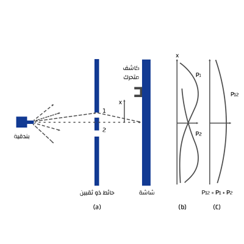

تجربة الشق المزدوج [1] [2]
في ميكانيكا الكم يمكن للجسيمات أن تكون موجات و جسيمات في نفس الوقت

\(p = probability\) (احتمالية)
في الحالة الأولى أطلقنا مجموعة من الرصاص و بامكانك حساب احتمال سقوط الرصاصة على الشاشة احتمال سقوط الرصاصة التي تدخل من الفتحة الاولى يساوي \(P1\) و احتمال سقوط الرصاصة التي تدخل من الفتحة الثانية هي \(P2\) إذا الاحتمالية للتجربة الكلية يساوي
\(P12=P1+P2\)
هذا في حال كان المقذوف جسيم مثل الرصاصة او موجة في المثال الثاني
لكن لو أجريت التجربة على إلكترونات فماذا سيحصل بعد إجراء التجربة ظهر على حائط الرصد تداخل مثل التي حصلنا عليها في التجربة الثانية اي ان الالكترونات سلكت سلوك الموجات
\(\lambda = h/mv\)